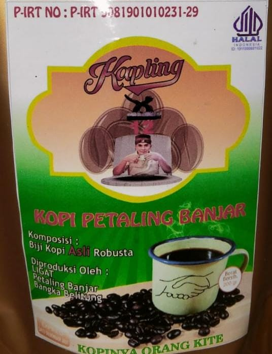

Pengelola Usaha
Mengatur kegiatan usaha.

Kopi Asli Petaling merupakan usaha UMKM yang bergerak dalam bidang kopi. Usaha ini berlokasi di Petaling Banjar 12, Bangka Belitung. Kopi Asli Petaling hadir untuk memperkenalkan produk kopi lokal kepada masyarakat.
Menjadi UMKM kopi lokal yang dikenal dengan produk berkualitas dan pelayanan terbaik.
Mengatur kegiatan usaha.
Mengelola persiapan produk kopi.
Melayani dan memasarkan produk.